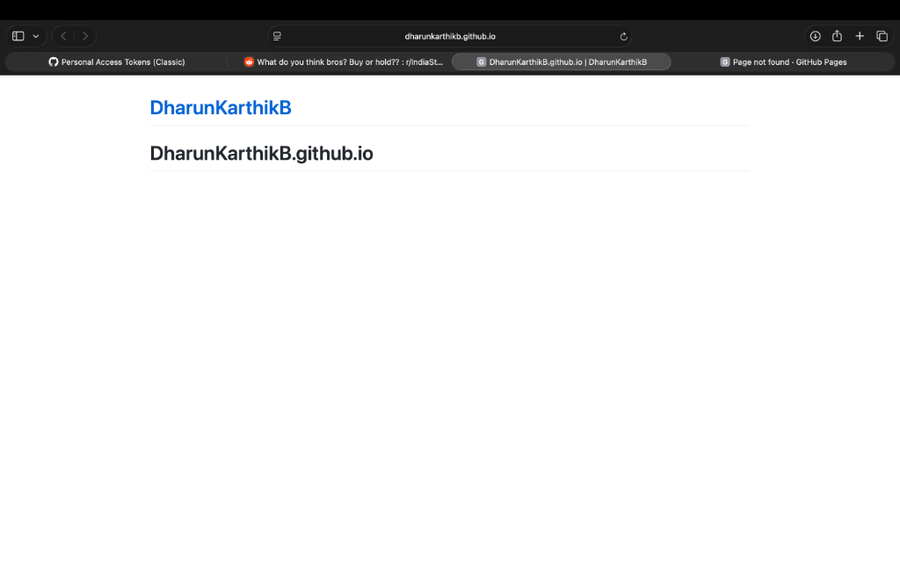
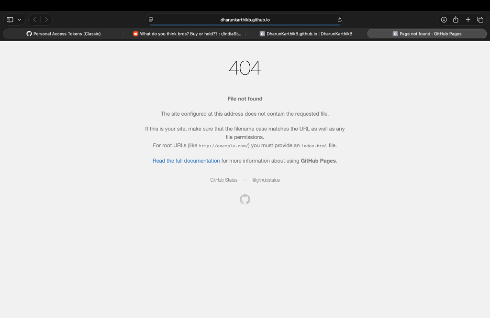
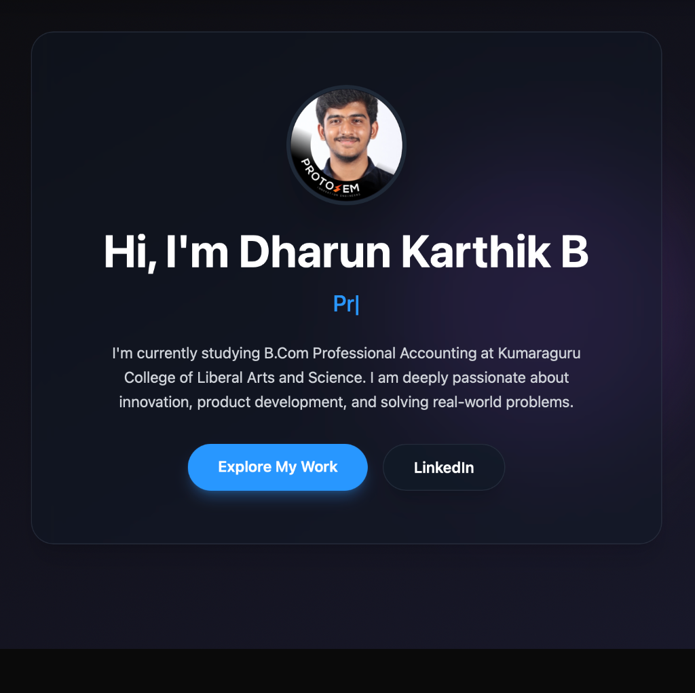
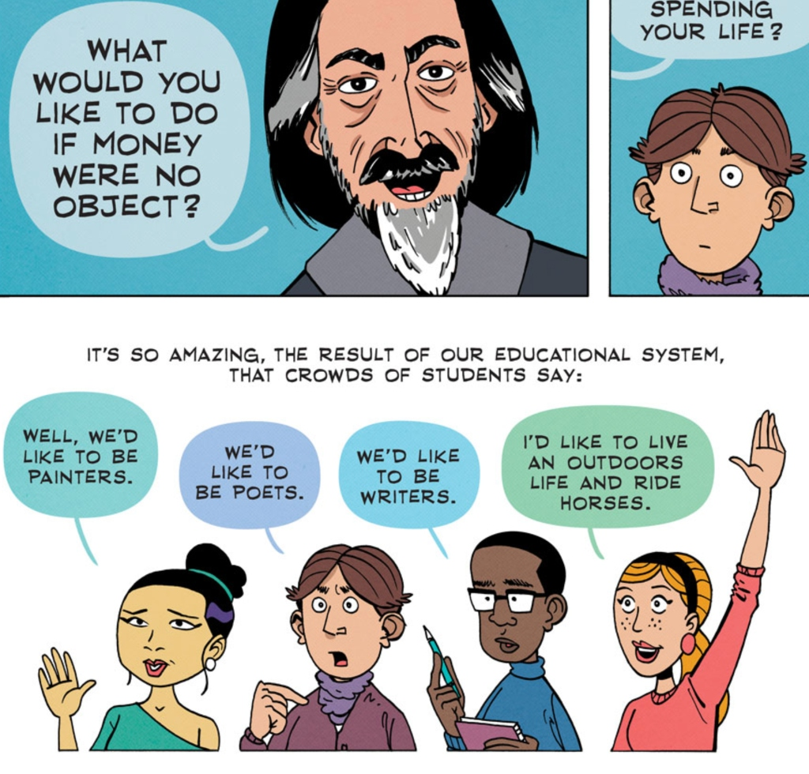
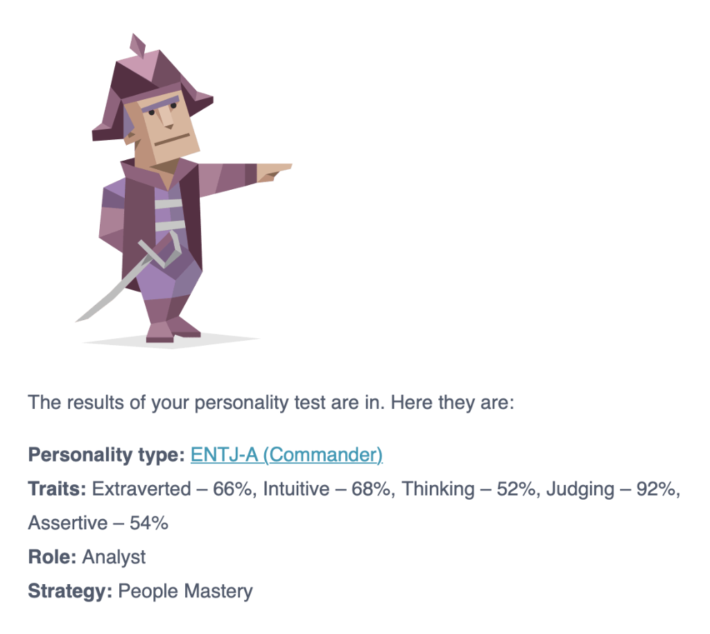

PHASE 01 • WEEK 00
Orientation & Self-Discovery
Week 0 was focused on getting familiar with the ProtoSem journey through a series of interactive and self-discovery activities. We began with a LinkedIn session, which helped us understand the importance of building a professional presence and presenting ourselves effectively.
This was followed by the 16 Personalities test, where I was identified as a Commander (ENTJ). We also explored the Zen Pencils story “What If Money Was No Object?”, which encouraged me to reflect on my ambitions, values, and what truly motivates me.


We then participated in the Marshmallow Challenge, where our team had to build a structure using spaghetti, tape, and thread, with a marshmallow standing at the top. It was a fun exercise that highlighted teamwork, communication, creativity, and learning through experimentation.
The week concluded with the inauguration of PRICE ProtoSem (Phygital Retail Intelligent Commerce & Entrepreneurship) in collaboration with the Retailers Association of India (RAI), with Kumar Rajagopalan, CEO of RAI, as the guest speaker.
Activity Gallery


